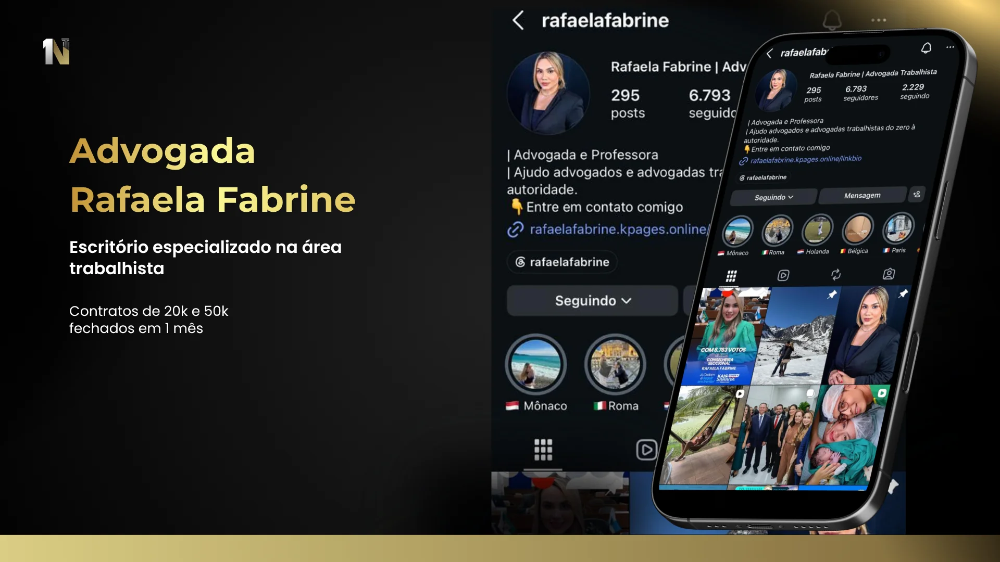
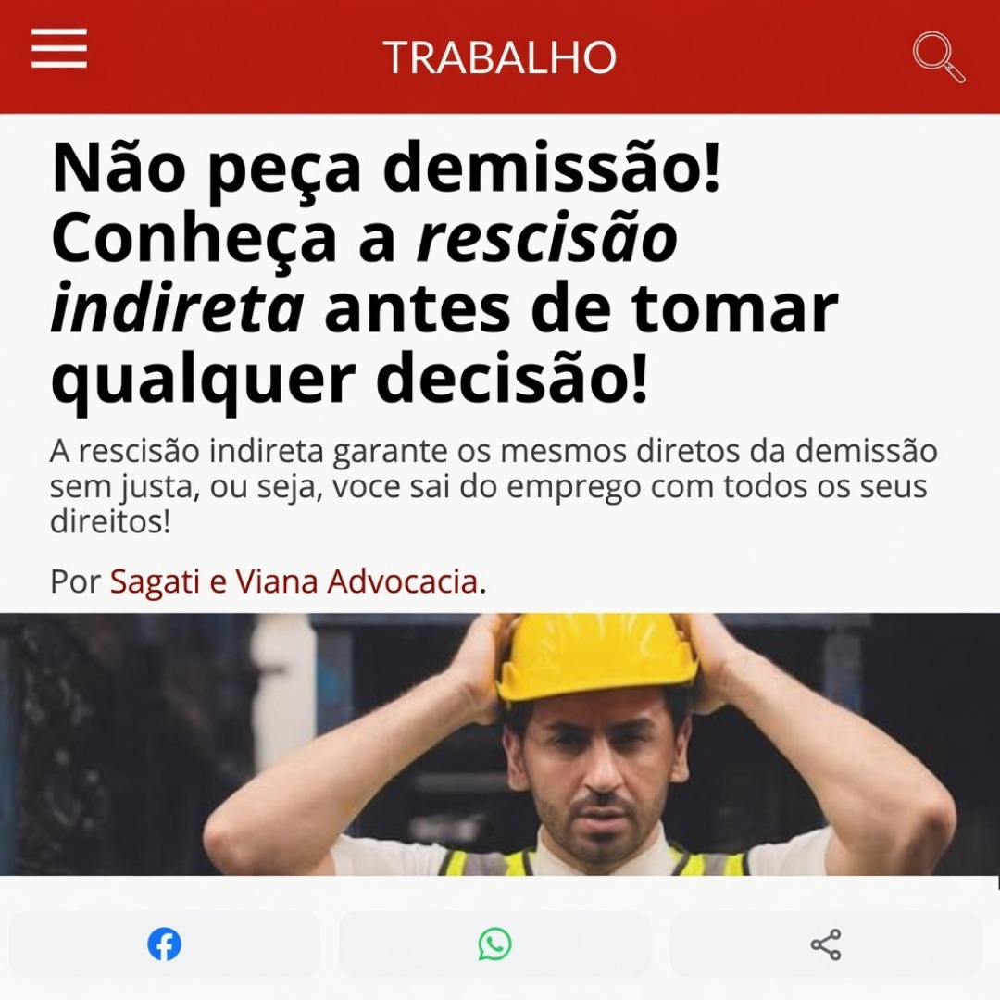
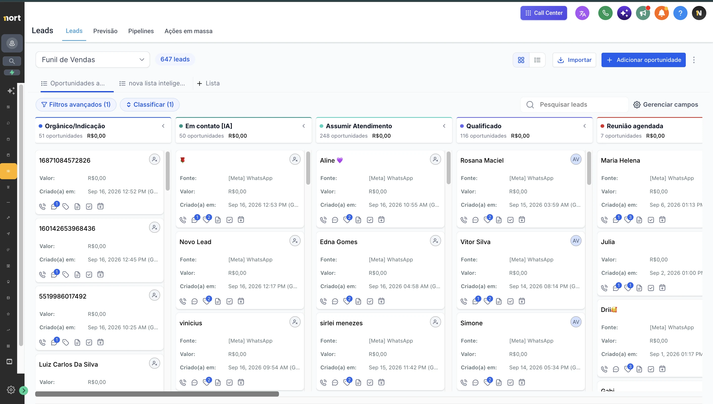
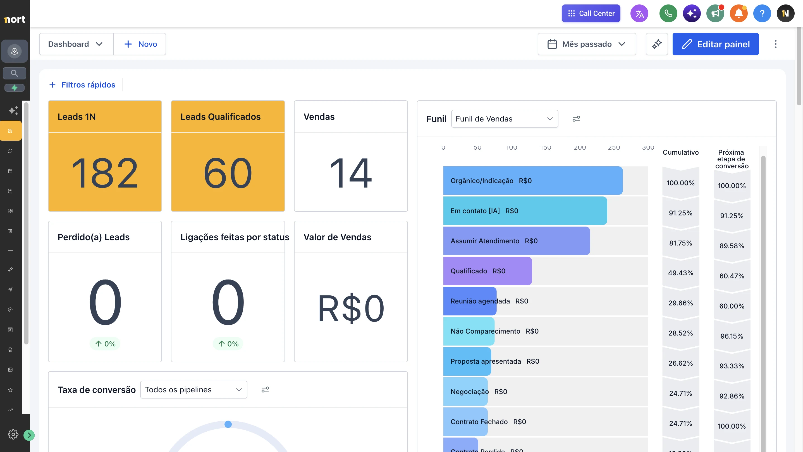
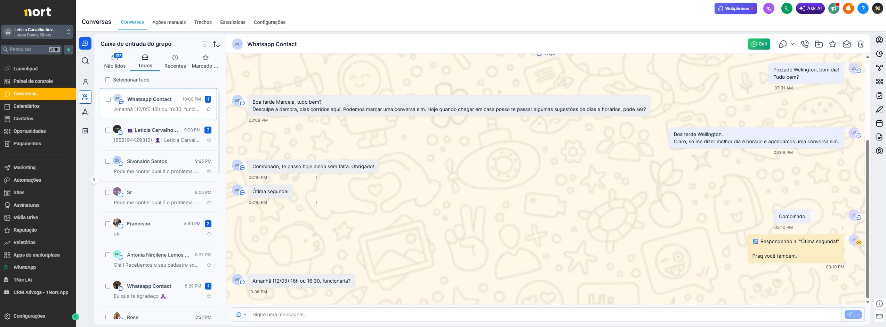
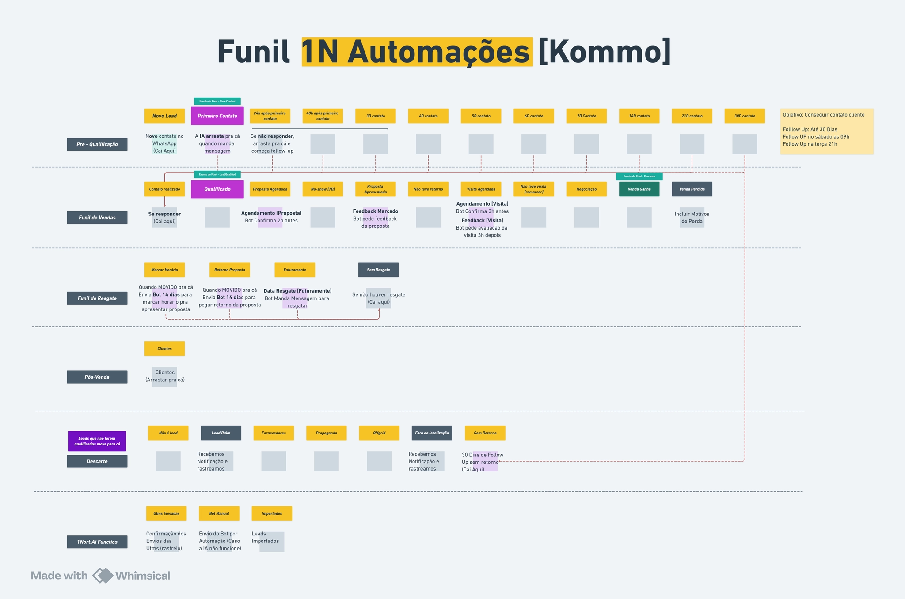

Pare de depender de indicação. Construa uma
máquina previsível de aquisição
pro seu escritório
A 1Nort entrega leads filtrados, atendimento por IA e CRM jurídico
organizado, pra você falar só com quem tem causa real, perfil e
capacidade de fechar. Na área em que o seu escritório atua.
Leads filtrados & qualificação
IA no atendimento 24/7
Processo comercial estruturado
CRM & dados em tempo real
Funis prontos para
Volume não é o problema. Qualificação é.
A 1Nort calibra cada etapa do funil pra advocacia — do criativo
à IA do WhatsApp. No final, só chega no advogado quem tem causa
real e perfil pra contratar.
Agência comum
Entrega volume sem filtro
Você descobre quem tem causa real
Métrica de vaidade (CPL)
"Aqui estão seus leads"
Seu time gasta horas qualificando
Ferramenta genérica de mercado
Sistema 1Nort
Entrega leads pré-qualificados
IA filtra perfil antes do advogado
Métrica de caixa (reunião e contrato)
"Aqui estão suas reuniões"
Advogado recebe só quem tem causa
Estrutura dedicada à advocacia
Menos curioso.Mais reunião.Mais fechamento.
Mais eficiência comercial
Mais previsibilidade
Mais resultado no caixa
NOSSOS SERVIÇOS
Soluções pensadas para escalar suas vendas
+40 especialistasProcessos validados
Estrutura
Estrutura da 1Nort
Contamos com uma estrutura completa e integrada para atender escritórios de advocacia em todo o Brasil, com processos, tecnologia e pessoas focadas em entregar resultado.
+40 especialistas dedicados ao seu crescimento
Processos validados e replicáveis
Tecnologia própria e automações exclusivas
Metodologia validada em trabalhista, previdenciário, bancário e consumidor
Suporte estratégico e acompanhamento contínuo
Squad jurídicoSó advocacia
Nicho jurídico
Somos nichados
Squad jurídico próprio dentro da 1Nort. Cada estratégia, criativo e funil é desenhado para advocacia e calibrado por área: trabalhista (reclamante e reclamada), previdenciário, bancário e consumidor.
Time dedicado à vertical jurídica
Funil dominado pra captação jurídica
Linguagem e abordagem que respeita as regras da OAB
Funil próprio por área: público, perguntas e abordagem da IA
Você não paga pela curva de aprendizado de quem nunca atendeu advogado
IA 24/7 no WhatsAppCRM em tempo real
Tecnologia
Tecnologia própria
Stack interna que move tudo: IA, CRM e automações conectados em tempo real, calibrados para a captação jurídica.
IA de Atendimento
Resposta imediata 24/7 no WhatsApp
Qualificação automática por intenção real
Agendamento de ligação ou Meet e handoff humano
Implementação de CRM
Funil comercial sob medida e automações de follow-up
Painéis e relatórios em tempo real
Treinamento da equipe e acompanhamento contínuo
Escritórios reaisFunil validado
Advocacia
Conhecemos a dor
Sabemos o que é depender de indicação, perder lead pra concorrente que respondeu primeiro e ficar refém da boa vontade do estagiário no atendimento.
Funil rodando em escritórios reais, todos os dias
Conhecimento prático, não só teoria de marketing
Falamos a língua do advogado, não do dentista
Estratégias testadas em escritórios reais antes
Você fecha com quem entende a captação jurídica de verdade
RESULTADOS
Resultados reais de nossos clientes.
Cases em vídeo e depoimentos de quem já estruturou o funil com a 1Nort. Mais no nosso Instagram.
DEPOIMENTOS
Resultado de quem já roda o sistema
Fábio Gil Advogados · +30 contratos no 3º mês

Rafaela Fabrine · Contratos de 20k e 50k em 1 mêsVV Advogados · Trabalhista · CuritibaAltinier Coutinho · +8 fechamentos mensais
“
Pessoal, quero compartilhar com vocês o resultado excelente de Dezembro. Foram 31 contratos fechados na área trabalhista. Quero agradecer pelo empenho e dedicação de toda equipe 1Nort.
Fabio GilFabio Gil Advocacia · Trabalhista
“
Esse mês eu organizei o WhatsApp, fiz mensagens para follow-up, o que melhorou. Hoje fechamos o nono contrato!
Farinelli & AltinierEscritório Farinelli Altinier
“
Parabéns a todos, acredito que estamos no caminho certo, nos últimos dias vieram mais leads do Mato Grosso e no geral mais qualificados. Vieram leads também do auxílio acidente, qualificados também!
Rosalen & CordeiroRosalen & Cordeiro Advogados
MÉTODO NORT
Método NORT
Do primeiro clique ao fechamento, com controle total do funil.
N
Novas Oportunidades Qualificadas
Demanda com causa real e potencial de contratar.
Filtro de qualificação por área
Criativo assertivo
Público certo
O
Operação Inteligente
Qualificação e avanço automático dos leads.
IA de atendimento inicial
Estratégias de follow-up
Qualificação automática da IA
CRM
Acompanhamento no WhatsApp
Estrutura comercial
R
Receita sob Controle
Clareza do que vira reunião e contrato.
Dashboard do CRM
Resultado por campanha
Leitura de dados
Otimização contínua
T
Treinamento Comercial
Seu time preparado para cada etapa do fechamento.
Funções claras: SDR e Closer
Rotina e tarefas de cada função
Call bônus de consultoria comercial
Não é sobre gerar mais leads.
É sobre controlar quem entra, avança e fecha.
N
Etapa 01 do Método NORTNovas Oportunidades Qualificadas
Você não precisa de mais leads.
Precisa parar de atrair quem não compra.
A 1Nort controla quem entra no seu funil desde o primeiro clique.
Tudo isso acontece antes de um vendedor falar com o lead.
Antes do clique
Aquisição — quem vê e o que vê
Cada área tem público, perguntas e abordagem próprios.
Escolha a do escritório e veja o funil dela.
Nome negativadoVoo canceladoCobrança indevidaPlano de saúde+6
Você não fala com quem não pode te contratar.
2
Criativos
(imagens e vídeos)
Anúncio real · 1

Anúncio real · 2
Exemplos rodando hoje em trabalhista. Os criativos da sua área são produzidos no 1º mês.
Aqui definimos se você atrai cliente… ou negociador.
Depois do clique
Qualificação — transformar clique em lead
3
Primeira Qualificação
Quero ser avaliado
Anúncio real · escritório trabalhista
4
Perguntas de qualificação
Tempo de empresaQuanto tempo trabalhou lá?
✓
Tipo de saídaFoi demitido ou pediu demissão?
✓
Carteira assinadaTrabalhava com registro CLT?
✓
ProvasTem holerites, prints ou testemunhas?
✓
Score do lead
88/100
FuncionáriosQuantos CLT a empresa tem hoje?
✓
SituaçãoRecebeu citação ou notificação?
✓
PrazoQuando é a audiência?
✓
DefesaJá tem advogado no caso?
✓
Score do lead
91/100
ContribuiçãoQuantos anos contribuiu ao INSS?
✓
BenefícioAposentadoria, auxílio ou BPC?
✓
Pedido no INSSJá teve o pedido negado?
✓
DocumentosTem CNIS, laudos ou carta do INSS?
✓
Score do lead
84/100
Tipo de contratoFinanciamento, consignado ou cartão?
✓
ValorQuanto foi financiado?
✓
SituaçãoParcelas em dia ou atrasadas?
✓
DocumentosTem o contrato em mãos?
✓
Score do lead
86/100
Tipo de problemaNegativação, voo, cobrança ou plano?
✓
QuandoHá quanto tempo aconteceu?
✓
ProvasTem protocolo, prints ou comprovante?
✓
EmpresaQual empresa causou o problema?
✓
Score do lead
82/100
5
Eliminação de curiosos
e caçadores de consulta grátis
↓ 65% cortados
Curiosos
Caçadores de consulta grátis
Sem causa real
Qualificados
6
IA inicia conversa no WhatsApp
⚖️
Seu escritórioonline
IA
Oi! Aqui é do escritório 👋 Recebi suas respostas. Posso analisar o seu caso agora?
Pode sim!
Confere alguns dados…
É assim que o lead chega até você
Direto no CRM, com todas as respostas do quiz e os dados da campanha.
✓
Chega no CRM com tudo
Seu comercial não deveria perder tempo tentando tirar leite de pedra.
O
Etapa 02 do Método NORTOperação Inteligente
Veja a IA atendendo um lead de
Agente IA 1Nort
online 24/7 · respondendo agora
conversa em andamento
LEAD TRABALHISTA · RECLAMANTEJoão · Demissão + horas extras
Em fechamento
LeadOi, fui demitido e nunca pagaram minhas horas extras.
IA 1NortSinto muito por isso, João. Você trabalhava com registro CLT e ainda tem holerites ou comprovantes?
LeadSim. Foram 8 anos de carteira e tenho os documentos.
IA 1NortÓtimo. Há indícios de uma causa viável. Posso confirmar seus dados para avançarmos?
LeadQuero pensar. Tenho receio dos honorários.
IA 1NortFaz sentido ter essa preocupação. A equipe explica todas as condições antes da assinatura. Posso validar seus dados e deixar tudo pronto para você decidir com segurança?
LeadPode. Quero seguir.
IA 1NortPerfeito! Aceite confirmado e contexto organizado. Vou acionar a equipe para enviar o link de assinatura.
Agente IA 1Nort
online 24/7 · respondendo agora
conversa em andamento
LEAD TRABALHISTA · RECLAMADACarlos · Empresa citada em reclamação
Em fechamento
LeadRecebi a citação de um ex-funcionário pedindo horas extras. A audiência é no mês que vem.
IA 1NortEntendo, Carlos. Para o advogado avaliar a defesa: quantos funcionários a empresa tem hoje e como é feito o controle de ponto?
LeadSão 32 funcionários. Temos ponto eletrônico, mas alguns meses estão incompletos.
IA 1NortObrigado. Pelo prazo da audiência, esse caso pede análise rápida. Posso agendar uma reunião com o advogado ainda esta semana?
LeadAntes eu queria entender quanto vai custar.
IA 1NortFaz sentido. Na reunião o advogado apresenta a estratégia de defesa e os honorários, antes de qualquer contratação. Tenho amanhã às 10h ou quinta às 15h. Qual fica melhor?
LeadAmanhã às 10h.
IA 1NortAgendado! Já enviei o resumo do caso para o advogado. Você recebe a confirmação por aqui.
Agente IA 1Nort
online 24/7 · respondendo agora
conversa em andamento
LEAD PREVIDENCIÁRIOMaria · Aposentadoria negada pelo INSS
Em fechamento
LeadMeu pedido de aposentadoria foi negado pelo INSS e eu não entendi o motivo.
IA 1NortSinto muito, Maria. Para o advogado entender o caso: quantos anos de contribuição você tem e ainda tem a carta de indeferimento?
LeadTenho 31 anos de contribuição e a carta, sim. Trabalhei alguns anos na roça sem registro.
IA 1NortEsse tempo rural pode ser reconhecido e mudar o resultado. Posso confirmar seus dados para o advogado analisar o seu caso?
LeadTenho medo de pagar e não dar em nada.
IA 1NortÉ uma preocupação comum. A equipe explica todas as condições de honorários antes da assinatura. Posso deixar tudo pronto para você decidir com calma?
LeadPode. Quero seguir.
IA 1NortPerfeito! Dados confirmados e caso organizado. Vou acionar a equipe para enviar o link de assinatura.
Agente IA 1Nort
online 24/7 · respondendo agora
conversa em andamento
LEAD BANCÁRIORafael · Financiamento com juros altos
Em fechamento
LeadFinanciei meu carro e a parcela não cabe mais. Acho que os juros estão muito altos.
IA 1NortEntendo, Rafael. Para o advogado avaliar: qual foi o valor financiado, em quantas parcelas e qual a taxa de juros?
LeadR$ 58 mil em 48x, com taxa de 2,9% ao mês. Já atrasei duas parcelas.
IA 1NortObrigado. Essa taxa merece análise, e com parcelas em atraso é importante agir logo. Posso confirmar seus dados para o advogado revisar o contrato?
LeadMas vou ter que pagar o advogado agora?
IA 1NortA equipe explica todas as condições antes de qualquer assinatura. Posso deixar tudo pronto para você decidir com segurança?
LeadPode. Vamos seguir.
IA 1NortPerfeito! Dados confirmados e contrato em análise. Vou acionar a equipe para enviar o link de assinatura.
Agente IA 1Nort
online 24/7 · respondendo agora
conversa em andamento
LEAD CONSUMIDORJuliana · Nome negativado indevidamente
Em fechamento
LeadMeu nome foi negativado por uma dívida que eu já paguei.
IA 1NortQue situação chata, Juliana. Você tem o comprovante de pagamento e sabe qual empresa fez a negativação?
LeadTenho o comprovante. Foi a operadora de telefone, faz uns 3 meses.
IA 1NortObrigado. Com o comprovante em mãos, há indícios de um caso viável. Posso confirmar seus dados para o advogado analisar?
LeadIsso vai demorar muito?
IA 1NortO advogado explica prazos e condições antes de qualquer assinatura. Posso deixar tudo pronto para você decidir com segurança?
LeadPode. Quero seguir.
IA 1NortPerfeito! Dados confirmados e caso organizado. Vou acionar a equipe para enviar o link de assinatura.
IA DE FECHAMENTO · 24/7
Sua IA não para na qualificação. Ela conduz até o fechamento.
Do primeiro “oi” ao “quero seguir”: a IA entende o caso, responde dúvidas, contorna objeções e mantém o lead avançando sem esfriar.
Resposta instantânea
Atende em segundos, inclusive fora do horário comercial.
Qualificação com contexto
Identifica a causa, o perfil e os dados que o advogado precisa.
Contorno de objeções
Entende a dúvida, responde com clareza e recupera o avanço.
Condução até o aceite
Confirma a decisão e deixa o fechamento pronto para concluir.
O único passo humano hoje
Sua equipe recebe o histórico completo e entra só no fim: link de assinatura ou reunião com o advogado.
NOSSO CRM
O CRM que move o lead sozinho.
Não é CRM genérico adaptado pra advocacia. É a ferramenta que a nossa própria operação usa todo dia, e que o seu time aprende em uma reunião.

Visão completa do funil, sem planilha.

Seus números do mês em uma tela só.

Sua equipe responde sem sair do card do lead.

Clique para ampliar — cada etapa do resgate com a mensagem e o prazo certos.
Notificação lead ruim / fora do padrão
O escritório [Seu escritório] recebeu um Lead Ruim 😢
Origem: [Meta] Whatsapp
Nome:Valter João SilvaMarcos PereiraAntônio CarlosPedro HenriqueLucas Martins
Lead ruim ou contrato fechado: o aviso chega no WhatsApp do time na hora, com a campanha que gerou.
StarterIA + Operação Enxuta
R$300/mês
IA 1Nort — qualifica leads 24/7 no WhatsApp
CRM — 2 usuários, pipeline e funil de vendas
Canais — WhatsApp Business API integrado
Entregáveis — lead qualificado, reuniões agendadas e dashboard
Mais vendidoPROIA + Time de Vendas
R$400/mês
Tudo do Starter incluso
CRM — 3 usuários, distribuição de leads e métricas do time
Mais canais — Meta, Google e Instagram Direct
Agenda automática — Google Calendar e lembretes
Automações + relatórios — follow-up e conversão por etapa
ScaleIA + Ecossistema Ilimitado
R$500/mês
Tudo do PRO incluso
CRM — usuários ilimitados
Ferramentas de tração — landing pages, avaliações e anúncios no Google Meu Negócio
Automações avançadas — workflows, bloqueio de leads frios e e-mails
Você escolhe o plano da ferramenta conforme o tamanho do time.
Novo · Etapas do pixel
O Meta aprende com os seus contratos, não com os seus cliques.
Com a IA lendo as conversas e o seu time registrando os contratos, o CRM devolve para o Meta
as etapas reais do seu funil. Já deixamos sua conta estruturada para a nova atualização
de etapas do pixel.
Aprendizado da campanhaotimizando para contrato
01A IA lê a conversaIdentifica quem tem causa real e perfil pra contratar
02Sobe o evento QualificadoO Meta passa a saber quem prestou
03Você registra o contratoO fechamento entra no CRM e vira evento
04Sobe o evento PurchaseA campanha se reotimiza atrás de quem contrata
A campanha para de perseguir lead barato e passa a perseguir
contrato. Quanto mais tempo roda, melhor ela fica.
R
Etapa 03 do Método NORTReceita sob Controle
Tenha sua receita sob controle.
No portal da 1Nort você vê o que entrou, o que avançou e o que virou contrato, tudo numa tela só.

 SDR
SDR Closer
Closer